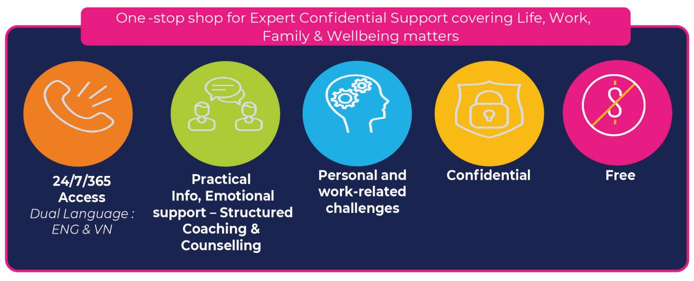
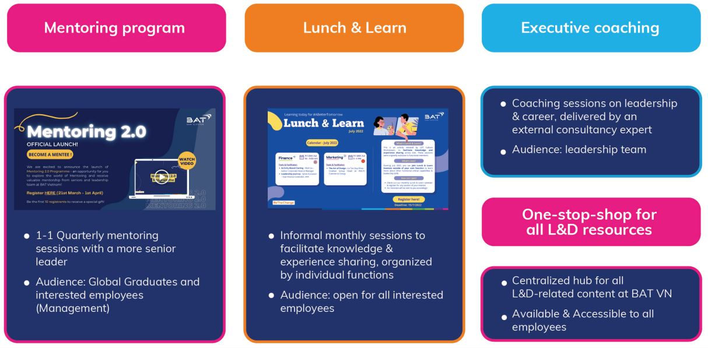
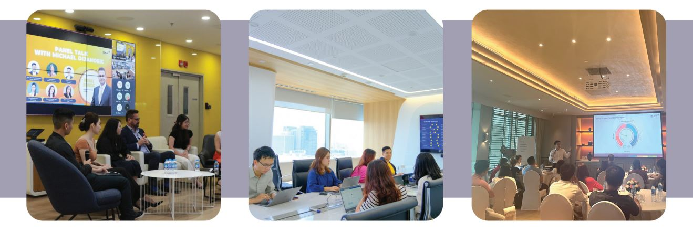

Nổi bật với chính sách Chăm Sóc Sức Khỏe Môi Trường Làm Việc và Phát Triển Nhân Tài
British American Tobacco (BAT) bắt đầu hoạt động tại Việt Nam từ tháng 10/1994. Và ngày nay được đánh giá là một trong những doanh nghiệp quốc tế hàng đầu trong ngành hàng tiêu dùng nhanh (FMCG) tại Việt Nam. Cung cấp danh mục gồm 8 thương hiệu sản phẩm cho người tiêu dùng, BAT đã và đang giữ vững vị thế thương hiệu vững chắc trên thị trường Việt Nam.
Chiến lược chăm sóc sức khỏe nơi làm việc và phát triển nhân tài chính là hai trọng điểm chính phản ánh giá trị mà BAT Việt Nam dành cho nhân viên của mình.

Phân tích Nơi làm việc bằng công nghệ Viva Insights giúp BAT đánh giá mô hình làm việc của mình một cách chi tiết hơn, từ đó xác định những hạn chế tiềm ẩn và cung cấp các phân tích hữu ích để cải thiện sức khỏe tinh thần cho người lao động. Công ty tin rằng việc nuôi dưỡng những thói quen làm việc tích cực ở nhân viên có thể nâng cao sức khỏe tinh thần của họ bằng cách mang lại cho họ nhiều thời gian hơn cho cuộc sống cá nhân.
Chương trình Hỗ trợ nhân viên của BAT cung cấp các dịch vụ tư vấn và hỗ trợ giúp nhân viên đối phó với các thách thức trong công việc và cuộc sống.

Phát triển Tài năng Toàn diện và Hiệu quả - BAT xây dựng và nâng cao năng lực cho đội ngũ nhân tài tương lai bằng cách tập trung vào việc phát triển kỹ năng chuyên môn và khả năng lãnh đạo của nhân viên. Công ty thực hiện điều này bằng cách cung cấp các trải nghiệm công việc phù hợp và cơ hội học hỏi từ người khác, đặc biệt là thông qua các chương trình đào tạo và phát triển có mục tiêu cụ thể dành cho mọi cấp độ, giúp nhân viên phát huy hết tiềm năng của mình và áp dụng nó vào công việc.

Khung Năng Lực Lãnh Đạo và Chuyên Môn Chức Năng là nền tảng định hướng cho các chương trình đào tạo & phát triển nhân tài tại BAT.
Mô Hình Phát Triển 70-20-10: BAT sử dụng mô hình này để đảm bảo nguồn học tập đa dạng với 70% học được từ trải nghiệm công việc, 20% từ việc học hỏi người khác và 10% thông qua đào tạo chính thức.
Phát triển nền tảng học tập kỹ thuật số - Đón đầu xu hướng số hóa và học tập do người học dẫn dắt, BAT đã tạo ra một nền tảng học tập kỹ thuật số nội bộ sử dụng AI. Nền tảng này giúp BAT kết nối nhân viên với tất cả các nguồn tài liệu học tập cũng như các khóa đào tạo nội bộ và bên ngoài, giúp nhân viên dễ dàng tiếp cận kiến thức và phát triển kỹ năng hiệu quả.

Cố vấn & huấn luyện (Mentoring & Coaching) là những yếu tố quan trọng trong việc phát triển lãnh đạo ở mọi cấp độ, cũng như chia sẻ kiến thức và tạo ra các giải pháp kinh doanh tốt hơn tại BAT. Bên cạnh việc cung cấp các buổi coaching cho các quản lý cấp cao từ các huấn luyện viên bên ngoài, BAT cũng sắp xếp cho họ các mentor là những lãnh đạo cấp cao hơn từ đội ngũ lãnh đạo Việt Nam để thực hiện các buổi mentoring 1-1 và mentoring nhóm hàng quý.


Chương trình phát triển nhân tài của BAT đã đạt được nhiều kết quả ấn tượng vào năm 2021. Khảo sát “Your Voice” với nhân viên cho thấy mức độ hài lòng đạt 78% (so với mức 62% của ngành FMCG toàn cầu) và dự kiến kết quả sẽ còn tốt hơn vào năm 2023. Chương trình FlexWork và Sức khỏe toàn diện cũng nhận được nhiều phản hồi tích cực, với 93% nhân viên cho biết họ đã hưởng lợi từ chương trình FlexWork. Việc giữ chân nhân tài cũng được cải thiện, với 98% nhân tài chủ chốt lựa chọn tiếp tục ở lại gắn bó với công ty (so với mục tiêu ban đầu là 90%).

Tel: (028) 62682222 - EXT.122
(+84) 908 267 759
Email: clientsolution@anphabe.com
Follow us